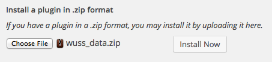
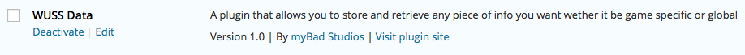

Thank you for purchasing the
Wordpress User Data system
This plugin extends the WordPress Login kit. As such, it requires that either:
- Both the
1. Preparation
The Wordpress User Data (WUD) package is a tad more abstract than the other kits in the series thus far as it brings a data storage and retrieval component to the table, not something visual. In order to enable the WUD system you need only do 2 things:
- Install the kit into your project
- Upload, install and activate the wuss_data.zip file as a plugin on your Wordpress website (once only)
If you haven't done so yet, follow the instructions at the bottom of this Readme
NOTE: The player has to be logged in for this kit to work.
2. About this kit
To explain it very simply, the WUD kit allows you to store any string or number you want into an online database and allows you to fetch it back again.
Variable names can be up to 32 characters long before it gets truncated. Values can be any number or string except scripting as all tags are removed once the value gets to the server to prevent code injection and attacks on the website
All data is stored per player and thus when you fetch the data back again you are again fetching only the data related to the player. You never need to worry that any player will access and use the data of another player.
With that being said, data is always saved under two separate categories. The first is a numeric value representing an individual game (game_id). The second is called a "category". Each game should have only one game_id and that should be configured inside the WPServer component. Each game can have as many categories as you want, though.
This means you can store your data either globally for the current game or you could separate your data into groups and save each field as a value under a specific category. For insance, some settings could be saved under 'Settings' while others are saved under 'Stats' and yet others still under 'user_preferences'. Really, though, how many categories and what you call them is entirely up to you.
2.1 Update
After the initial release of the Wordpress User Data kit, people started asking for global settings that can be shared by all players. That functionality has since been added. All data is stored for and accessible only by the logged in user who owns the data. No user can access the data of any other user except for data stored globally for all users.
Typically this would not be something the players would change in game as all players will see the reflected values. It does, however, allow the developer to make changes to the game's settings after release and result in updates being immediately and automatically set for all players without the need to download any updates.
3. Saving data
The WUD plugin comes with a bunch of functions to simplify uploading and fetching data from the Wordpress server.
When you update settings you can update only one field at a time or you can update as many as you like with only one restriction:
You can only update one category at a time.
To store data to your database, follow these steps:
- Create a new cmlData variable (or use an existing one)
- Set the variables you want to create / update and their associated values
- Pass the variable to the WUData.UpdateCategory function
Example:
cmlData
GlobalSettings = new cmlData(),
Settings = new cmlData();
GlobalSettings.Set("ScreenName", "MrDude");
GlobalSettings.Set("RealName", "DrDude");
Settings.Setf("GlobalAudioVol", 0.7);
Settings.Setf("VoiceVol", 0.9);
Settings.Seti("Lives", playerLives);
WUData.UpdateCategory("", GlobalSettings);
WUData.UpdateCategory("Settings", Settings);
4. Fetching data
To fetch the data from the server you need only call one of the numerous functions provided and specify a function that will parse the data that is returned from the server
The choices that are provided allow you to fetch a single field from a category of your choice, or to fetch the entire category. Alternatively, fetch all the categories of the current game or fetch absolutely every single last bit of data stored for the current player. This includes all data stored for other games also so this allows you to give bonusses in one game from within another, or reward players for owning other titles (for example)...
Game id 0 is reserved for global settings though so you should NOT give your games a game id of 0. This means that you can store game related info under the id of the game but also store user specific info for access within any game at any time. Need to know what his dog's name is? Or perhaps his girlfirend's name or marital status or favorite book... any info related to the player but not specific to any game, simply store it to the global settings. Global settings can also be separated into categories but, as with all games, categories are optional.
NOTE: Global settings for the users are also considered private info and accessible only to that user. The WordPress User Data kit allows for global data to be stored for the game also but that is separate from the player's global data. The game's global data may or may not contain categories. Think of the game itself as being another player. That player's data is visible to everyone but everyone else's data is kept private and is only accessible to themselves.
5.Parsing fun
The data returned from the server is in the CML format meaning you can use any of CML's plethora of filtering and parsing functions to get to your data and, as always, CML can return your data to you already formatted as string, int, float, bool, Color, Vector3, Quaternion and Rect. The WUD system also provides you with a new subset of search functions specifically designed for this kit. This means that you now have two methods for getting to your data. If one doesn't suit your taste, simply use the other.
Example: (Assumes the server's results are stored in raw_data and you have already extracted the game's node and stored it in game)
Using the WUD system's custom functions: List<cmlData> categories = WUData.ExtractCategoriesForGame(raw_data, game.ID); Using CML's own functions List<cmlData> categories = raw_data.Children(game.ID);Both will yield the same result so the choice is up to you which one you prefer to use. Once you get familiar with the use of CML's functions you will find that you have far more control over the data that is returned to you. Use CML for total control over your returned data and use the Wordpress User Data kit's wrapper functions to get started using the kit quickly. The wrapper functions are explained in section 6, below.
6. Available functions
| FetchField(string field_name, string cat = "", System.Action |
| Fetches a single field from the database |
|
field_name The name of the field you wish to retrieve cat The name of the category containing this field response A function that will receive the response from the server. See below for response formats. gid The id of the game this data belongs to. 0 means global. -1 defaults to the value in WUServer.game_id |
| FetchCategory(string cat="", System.Action |
| Fetches a single category from the database |
|
cat The name of the category containing this field response A function that will receive the response from the server. See below for response formats. gid The id of the game this data belongs to. 0 means global. -1 defaults to the value in WUServer.game_id |
| FetchGameInfo( System.Action |
| Fetches all categories of the specified game, including it's global variables catgory |
|
response A function that will receive the response from the server. See below for response formats. gid The id of the game this data belongs to. 0 means global. -1 defaults to the value in WUServer.game_id |
| FetchGlobalInfo( System.Action |
| Fetches all categories of the non-game-specific global variables |
|
response A function that will receive the response from the server. See below for response formats. |
| FetchEverything(System.Action |
| Fetches absolutely everything for this player including all global variable categories as well as all info for all games. |
|
response A function that will receive the response from the server. See below for response formats. |
| RemoveField(string field_name, string cat="", System.Action |
| Removes a single field from the database |
|
field_name The name of the field you wish to remove cat The name of the category containing this field response A function that will receive the response from the server. See below for response formats. gid The id of the game this data belongs to. 0 means global. -1 defaults to the value in WUServer.game_id |
| RemoveCategory(string cat="", System.Action |
| Fetches a single field from the database |
|
cat The name of the category containing this field response A function that will receive the response from the server. See below for response formats. gid The id of the game this data belongs to. 0 means global. -1 defaults to the value in WUServer.game_id |
| RemoveGameData(int gid = -1, System.Action |
| Removes all of the player's data for the game from the database |
|
gid The id of the game this data belongs to. 0 means global. -1 defaults to the value in WUServer.game_id response A function that will receive the response from the server. See below for response formats. |
| UpdateCategory(string cat, cmlData fields, int gid = -1, System.Action |
| Updates a category with the fields provided. If the fields do not exist they are added. The following fields are NOT added or updated as they hold special meaning to the kit: id, gid, cat, wuss, action, unity |
|
cat The name of the category you want to place these variables under fields A list of all the fields you wish to update / create along with their values gid The id of the game this data belongs to. 0 means global. -1 defaults to the value in WUServer.game_id response A function that will receive the response from the server. See below for response formats. |
| List<cmlData> ExtractAllGames(CML raw_data) |
| Extracts only the _GAME_ nodes from raw_data. This provides you with the various game's gid value. |
|
raw_data Valid CML data obtained from the server |
| cmlData ExtractFirstGame(CML raw_data) |
| Extracts only the first _GAME_ node from raw_data. This provides you with the game's gid value. |
|
raw_data Valid CML data obtained from the server |
| ExtractAGameByField(CML raw_data, string field, string value) |
| Examines the global variables of all games found inside raw_data. If it finds one that contains the field in field and that field has the value specified by value, it returns it otherwise it returns null |
|
raw_data Valid CML data obtained from the server field The variable the global settings must contain. Eg. "name" value The value field must hold to be true. Eg. "PacMan" |
| cmlData ExtractAGameByName(CML raw_data, string name) |
| Examines the global variables of all games found inside raw_data. If it finds one that contains a field called "name" and it's value matches the value in name it returns that game node, otherwise it returns null |
|
raw_data Valid CML data obtained from the server name The value this game's global variable "name" must hold to be true. Eg. "PacMan" |
| List<cmlData> ExtractCategoriesForGame(CML raw_data, int ID) List<cmlData> ExtractCategoriesByGameName(CML raw_data, string name) |
| Extract the categories for a specific game so you can access the fields contained within them |
|
raw_data Valid CML data obtained from the server ID The ID of the _Game_ node you want the categories of. Note: Not the gid variable, but the node's actual ID! Example: cmlData PacMan = WUData.ExtractAGameByName(raw_data, PacMan"); if (null != PacMan) categories = ExtractCategoriesForGame(raw_data, PacMan.ID); name First calls ExtractAGameByName then returns the categories found for that game node |
| cmlData ExtractCategoryFromGame(CML raw_data, string category_name = "", int id = 1) cmlData ExtractCategoryFromGameName(CML raw_data, string category_name = "" , string game_name = "Global") |
| Extracts only the specified category from the game |
|
raw_data Valid CML data obtained from the server name The name of the category you want to extract id The ID of the game node. Note: Not the gid value, but the game node's ID. game_name The game to find via ExtractAGameByName before the category is extracted from it |
| string GetField(List<cmlData> categories, string field_name, string cat = "") int GetFieldi(List<cmlData> categories, string field_name, string cat = "") float GetFieldf(List<cmlData> categories, string field_name, string cat = "") |
| Extracts a specific field from an extracted list of categories and returns it formatted as string or numeric data types |
|
categories A list of categories extracted from a game field_name The field to look for cat The category to look in for the field. Defaults to global category |
| string GetField(CML data, string field_name, string cat = "", int gid = 0) float GetFieldf(CML data, string field_name, string cat = "", int gid = 0) int GetFieldi(CML data, string field_name, string cat = "", int gid = 0) string GetField(CML data, string field_name, string cat = "", string game_name = "") float GetFieldf(CML data, string field_name, string cat = "", string game_name = "") int GetFieldi(CML data, string field_name, string cat = "", string game_name = "") |
| Extracts a specific field from the server's response and returns it formatted as string or numeric data types |
|
data Valid CML data obtained from the server field_name The field to look for cat The category to look in for the field. Defaults to global category gid The game this variable belongs to. Defaults to global settings game_name The name of the game this variable belongs to. Defaults to global settings |
NEW
As of version 2.1, you now also have access to FetchSharedField, FetchSharedCategory, FetchAllSharedInfo, RemoveSharedField, RemoveSharedCategory and UpdateSharedCategory. These functions work exactly the same as the ones listed above except the data they operate on are those affecting all users instead of just a single player.
Example use include selecting what enemies must spawn on a certain level or what a user must do to complete a level etc. This will allow you to publish the game and then make changes to certain elements of the game afterwards without requiring your customers to download your product again. All changes are live to all players immediately (well, next time your application fetches that data).
7. Returned data structures
Depending on which action you take (which function you call), the response from the server will be different but it will still be standard.
When fetching a single field: <DATA> [success] true <_CATEGORY_> [category] name [requested field] value When fetching a single category: <DATA> [success] true <_CATEGORY_> [category] name [field 1] value [field n] value ... When fetching a single game: <DATA> <_GAME_> [gid] value <_CATEGORY_> [category] name [field 1] value [field n] value ... <_CATEGORY_> ... When fetching everything: <DATA> <_GAME_> [gid] value <_CATEGORY_> [category] name [field 1] value [field n] value ... <_CATEGORY_> ... <_GAME_> ... When removing a field, category or game <DATA> [success] true When an operation failed <DATA> <status> [success] false [message] Error message
8. Installing the plugin
| Step 1. Log into your Wordpress dashboard and select "Add new" from the Plugins menu |  | |
| Step 2. At the top of your screen, select "Upload" | ||
| Step 3. Find the wuss_timer.zip file in Assets/myBad Studios/WUSS/Wordpress/Plugins and upload that to your website. |  | |
| Step 4. After it is uploaded it will ask you to activate the plugin. Do so and you are done... |  | |
|  | ||